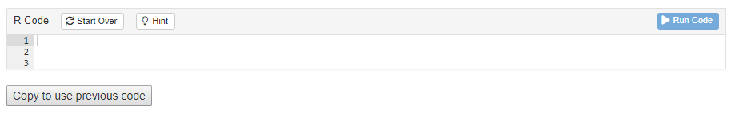

This document reviews some of the technical details behind the special modifications we have made to the basic tutorial technology. It is only of interest to those thinking of modifying the current approach. It also includes some items worth investigating and/or fixing.
Package locations
Keep in mind that there are (at least) two versions of your.tutorial.package installed on your machine. In my case (using all.primer.tutorials), we have
> /Library/Frameworks/R.framework/Versions/4.1/Resources/libraryand
> /Users/dkane/Library/Caches/org.R-project.R/R/renv/library/all.primer.tutorials-07f29d85/R-4.2/aarch64-apple-darwin20"The first is the default location for packages. This is where things
go unless you do something special. The second is installed by
renv, which was used within the
all.primer.tutorials project. When you are working in your
all.primer.tutorials project, as you generally will, the
renv version of the all.primer.tutorials
library is what you will be using. You can check this by running
.libPaths().
> .libPaths()
[1] "/Users/dkane/Library/Caches/org.R-project.R/R/renv/library/all.primer.tutorials-07f29d85/R-4.2/aarch64-apple-darwin20"
[2] "/Library/Frameworks/R.framework/Versions/4.2-arm64/Resources/library" Whenever you library() a package, R looks through, in
order, the values returned by .libPaths().
renv sets things up so that the first item is its
collection of packages. Note that these are placed in a weird location,
including a temp directory name
all.primer.tutorials-07f29d85. I am not sure how
renv decided to create a new one of these. It does not
delete the old ones. In the case of major breakdowns, deleting these
directories by hand can fix things.
YAML and setup code chunk
The top of your file should look like the text below.
Every tutorial must load the learnr package in order
to function. library(tutorial.helpers) is always included
because it contains the file, submissions_functions.R,
which enables answer downloading. You may need to add other packages
which are used in your tutorial. Any such packages also need to be
included in the DESCRIPTION file.
echo = FALSE is a handy default because, most of the
time, we don’t show users the code. Setting the
tutorial.exercise.timelimit to 60 seconds is safe, but
probably not necessary. tutorial.storage must be set to
local to ensure that user work is saved between
sessions.
The other 2 code chunks load in the code for the “Copy Code” button and the Information section. Do not remove these code chunks. The information section and the copy code button are crucial infrastructure for the tutorial and these code chunks allow us to implement them easily without taking too much space.
Copy Code Trickery
Current Process
In order to implement copy-pasting for an exercise, you need to add
the line
<button onclick = "transfer_code(this)">Copy previous code</button>
either before or after the exercise that you want to copy-paste to. This
will add a button that looks like this:

The user just needs to click the button in order to copy the code from the previous exercise into the current one.
Possible Improvements
Personally, I think the current solution is very close to the ideal
solution. The only downsides being that 1) tutorial makers still have to
include something in the exercises and 2) the button would look much
better on the toolbar section of the exercise, next to
"Start Over" and where the “hint” would be.
However, the possibility of automatically copying code to clipboard
when clicking the "Run Code" button has yet been explored
and could offer a better solution.
Comments on .Rbuildignore
For some reason, it is impossible to include comments in the
.Rbuildignore, at least by using the “#” symbol. I think
the key issue is that using * (or maybe a parenthesis) in a
line which begins with # causes trouble. Regardless, here
are some thoughts on the current version.
We would like to ensure that all the junk files which end up in the
tutorials/* directories are not included in the build. Such
files are often large. They also run the risk of messing things up in
that they might cause certain tests to pass for us but which would fail
for anyone who downloads from Github. (The .gitignore file
does a reasonable ensuring that such files do not end up on Github.)
The key line is:
tutorials/[^/]*/(?!(data|images|.*Rmd))This excludes everything in any subdirectory of the tutorials
directory except an images directory (a file named images
would also be included) or a data directory or a file
suffixed with .Rmd.
Adding more libraries
If you are using a new library, there are several things you need to
check. First, most obviously, you should install the package within the
primer.tutorials directory. Second, you must use library(X)
in the setup chunk within the tutorial.Rmd itself. Third, you need to
run renv::status(). This should report that there is a new
package which is not part of renv.lock. Then, you will need to run
renv::snapshot() so that the renv.lock file is updated.
Fourth, you need to add the package to the DESCRIPTION file, in the
Imports: section. (And don’t forget the comma when you do so.) If you
don’t do this, then R CMD check might work on your computer, where
library X is already installed, but won’t work in Github actions since R
relies on the DESCRIPTION file to know which packages to install.
We have seen weird situations in which even doing all of the above did not work. The required hack was to install the new package in your main (default) library. Now, it seems weird that this would help since, with renv, we should never be using that location. I suspect that there is a bug involved in the interaction between R CMD check and renv.
Tour of the Package Functions
Submission Functions
submission_ui is an HTML structure defined through shiny, which is inserted to the end of every tutorial. It creates buttons to download submission reports in the forms of RDS and HTML.
submission_server() is a function that communicates with the shiny server during a tutorial. It provides the download functions, downloadHtml and downloadRds, for the user interface to call when downloading submission reports.
Submission Helper Functions
build_html is a function that creates and downloads a tibble report of tutorial submissions in HTML.
build_rds is a function that creates and downloads an tibble report of tutorial submissions in RDS.
create_tibble_from_submissions is a function that takes in tutorial submissions and creates a formatted tibble with the columns: id, submission type, and answer. The submissions are arranged by the order these questions appear in the tutorial
get_label_list is a function that gets the appearance order of questions in a tutorial.
get_submissions_from_learnr_session is a function
that gets submissions of the current tutorial session through learnr
functions, specifically learnr:::get_all_state_objects()
and learnr::submissions_from_state_objects(). It returns a
list of submission objects, each containing details about the question
and answer.
Add-in Functions
format_tutorial is a function that takes a tutorial path and formats the code chunk labels into a standardized format.
check_current_tutorial is an add-in function that
runs format_tutorial() on the current opened tutorial. It
is a handy add-in for tutorial makers who want to make sure their chunk
labels are correct.
make_new_exercise is an add-in function that creates a code exercise with correctly formatted labels and general structure.
make_new_q_no_answer is an add-in function that creates a question exercise that does not have an answer to display with correctly formatted labels and general structure.
make_new_q_with_answer is an add-in function that creates a question exercise that does have an answer to display with correctly formatted labels and general structure.
Permanent objects
Permanent objects should be avoided, if possible. The problem is that each Exercise code chunk is its own “world.” It knows nothing of any actions taken in previous code chunks, except for three exceptions:
Any objects created in the global “setup” code chunk are available in all Exercise code chunks. The annoying thing about this option is that we would, ideally like to have the obects created near — in the Rmd — to the Exercises which use them. This also means that we can only use names like “fit_1” or “pp” once in each tutorial.
Objects created in a setup chunk for just one exercise.
Objects created in a code chunk which is then referenced by using the exercise.setup code chunk option in any Exercise which needs access to these objects. This is probably the best approach.
But what about regular code chunks which are neither Exercise code chunks nor setup chunks. Do objects created there persist? Maybe! Sometimes!? My sense is that such objects are available when the tutorial is knitted. This is why we can show a plot at the end of a Section after creating it at the start. But such objects are not available at run time, which is why they are not seen in Exercises.
No aspect of the tutorials has given us more trouble than permanent objects. In particular, it sometimes seems like things will work with Run Document but not with Run Tutorial. Since students always do the latter, we need to test that way as well.
Verbatim Code Chunks
See here for advice about how to use verbatim R code chunks within an R Markdown document, as we do in this document.